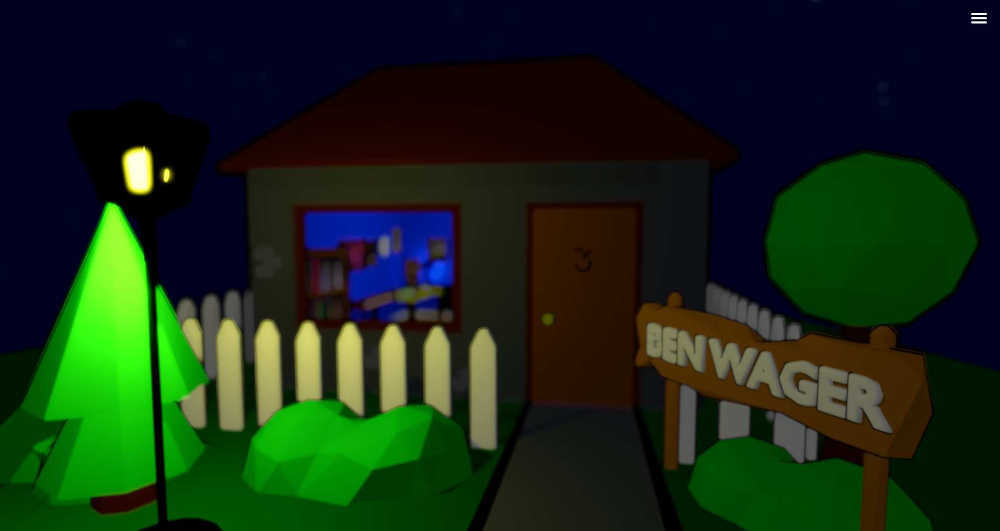
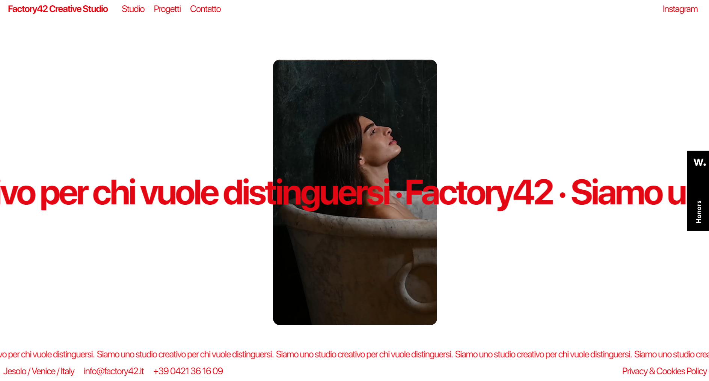
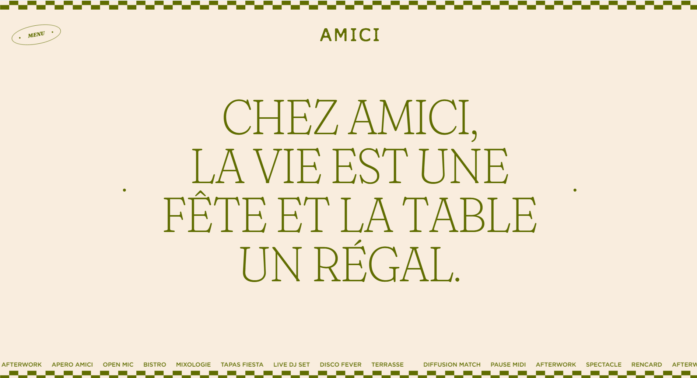
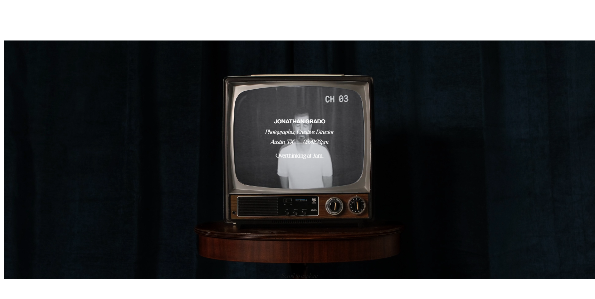

Aquí están las webs que más me han gustado.
- World of Ben. Me ha gustado que sea tan interactiva y original, porque te permite entrar e interactuar con todos los elementos de su estudio
- Factory 42 Me gustan los colores y la tipografía además de la manera de presentar los proyectos y cada sección de contenido.
- Restaurante amici. Es divertida y original para ser una web de un restaurante.
- Jonathan Grado. Un diseño minimalista que funciona muy bien.



